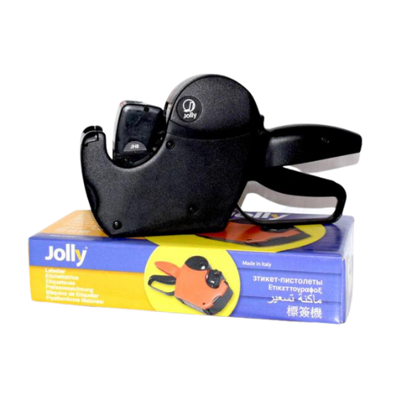
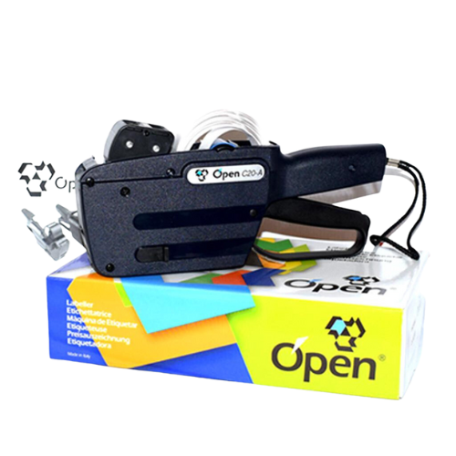
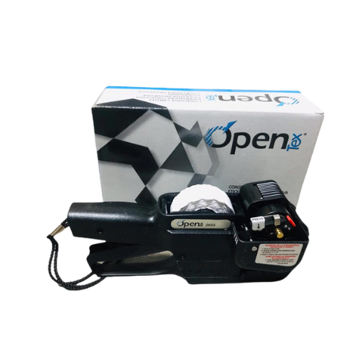
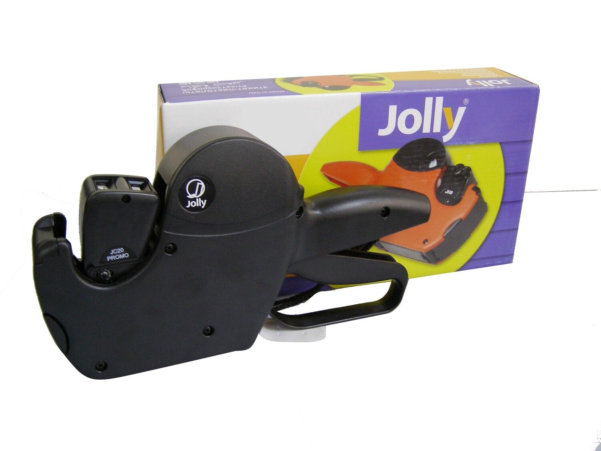
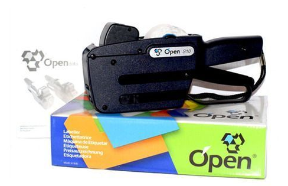
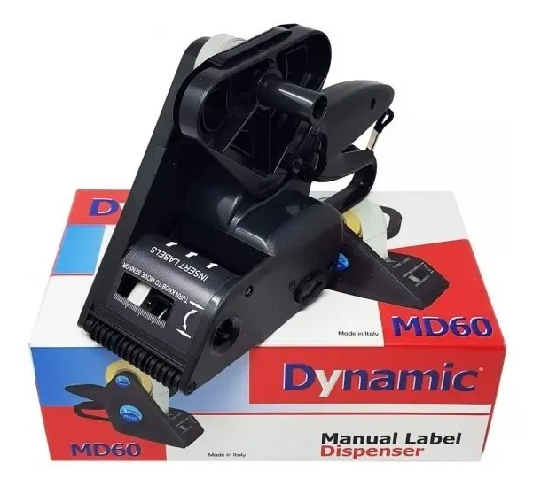

Etiquetadoras Manuales y Accesorios
Desde el modelo más simple para precios hasta el sistema barril open para etiquetas de mayor formato.

La etiquetadora manual más usada en comercios y depósitos argentinos. Imprime precios, fechas o códigos en una línea de texto. Sin energía eléctrica. Incluye rollo entintador. Lista para usar en minutos.

La etiquetadora más vendida en supermercados y distribuidoras argentinas. Imprime precio en la primera línea y fecha de vencimiento o número de lote en la segunda. Mayor información en cada etiqueta con un solo golpe.

_edited_edited.png)

Etiquetadora numeradora progresiva con rodillo entintador incluido, pensada para la industria textil: etiqueta cortes de tela y talles cambiando el número en cada disparo, con 3 modos de impresión (fijo, correlativo 1 y correlativo 2).

La versión Jolly de 2 líneas, con 10x10 dígitos configurables por línea. Diseño compacto y liviano, ideal para tiendas, supermercados y fábricas que ya usan otros equipos Jolly.

Etiquetadora de 1 línea con 10 dígitos alfanuméricos configurables, en formato de etiqueta 26×12mm. Alternativa de marca Open a la Jolly de 1 línea, con el mismo uso simple para precio o fecha.

Dispensador manual con sensor mecánico móvil, para aplicar etiquetas pre-impresas de formas rectangulares, cuadradas, redondas, ovaladas o irregulares — no solo rectangulares como el Open Tex.
Rollos y entintadores en stock
Rollos de etiquetas 26×12mm y 26×16mm en blanco, amarillo, rojo, azul y verde. Entintadores compatibles con todas las marcas.
Ver insumos